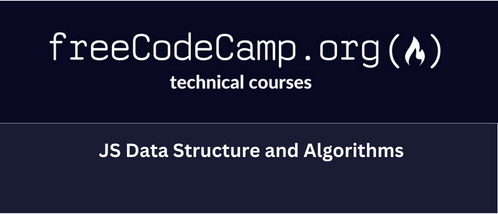
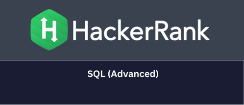
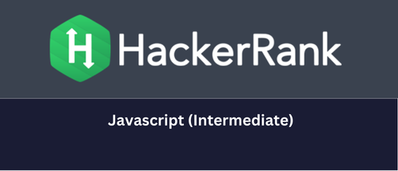

AI / Generative AI
LLM applications, prompts, structured outputs, RAG, document workflows and grounded responses.
LLM appsRAGEmbeddingsOpenAI APIs
SENIOR SOFTWARE ENGINEER · BENGALURU, INDIA
10+ years building backend and cloud-native systems with Python, Node.js and TypeScript. Now applying that engineering foundation to Generative AI, Agentic AI, LLM applications, evaluation and reliable automation.
An experienced software engineer who connects AI ideas to the APIs, data, queues, deployments and quality practices that make products dependable.

I am a Senior Software Engineer with 10+ years of experience across backend development, full-stack delivery, distributed systems, cloud-native applications and test automation. My primary engineering languages are Python and Node.js, with JavaScript and TypeScript for service, API and product work.
My current direction is AI application engineering: Generative AI, LLM-powered workflows, Agentic AI, retrieval-augmented generation and evaluation. I focus on the engineering details that make AI useful in practice—data flow, API boundaries, tool calls, asynchronous processing, observability, testing and safe iteration.
The AI projects in this portfolio are clearly identified as independent study or portfolio work unless explicitly marked as professional experience. This keeps the profile ambitious, transparent and interview-defensible.
Six connected capabilities show how I approach modern software: start with the user problem, then design the system around data, reliability and measurable quality.
LLM applications, prompts, structured outputs, RAG, document workflows and grounded responses.
Tool-using workflows with explicit state, guardrails, retries, approvals, idempotency and auditability.
Backend services, data processing, ML/DL prototypes, migration tooling and evaluation pipelines.
Production APIs, microservices, real-time systems, asynchronous workflows and reusable platform components.
AWS and Azure delivery with containers, CI/CD, infrastructure configuration, observability and production troubleshooting.
API and end-to-end automation plus a quality mindset for regression, benchmarks, failure analysis and release confidence.
A single career timeline across two employers, with client and product engagements shown for context.
Apr 2021 – Jun 2026
Software Engineer → Senior Software Engineer
Node.js · TypeScript · APIs · Redis/CDN caching · Sentry · New Relic · Datadog · Kibana
Node.js · TypeScript · AWS · DynamoDB · PostgreSQL · ECR · CircleCI · Datadog
Node.js · AWS SAM · Lambda · API services · JFrog · Playwright/Cypress/Jest
Payments · Node.js · APIs · Microservices · Security · Distributed systems
Jul 2016 – Apr 2021
Software Trainee → Software Engineer
Python · SQL · Database migration · Validation · Azure
Node.js · TypeScript · React · Browser automation · Product engineering
Node.js · JavaScript · OAuth2/JWT · Form.io · Docker · Event-driven workflows
Product engineering · JavaScript/Node.js · APIs
CRM APIs · Reporting · Pentaho · AWS
Practical projects from the existing portfolio, with AI/ML work kept separate from professional client delivery.
A Flask application bringing together a text summarizer, image classifier and iris classifier.
View detailsExplores a CNN/RNN pipeline for object detection, frame-level descriptions and NLP-generated video tags.
View detailsClassifies resume text into sections such as experience, skills and projects using supervised ML techniques.
View detailsA GAN experiment that generates image samples and compares generated and source distributions using PCA-based loss analysis.
View detailsA Django application using collaborative filtering so users can explore, rate and receive personalized recommendations.
View detailsStructured learning and portfolio work covering RAG, tool-using agents, evaluation/benchmark design, cloud deployment and AI quality automation.
The implementation status of each learning component is kept separate from professional project claims.
A decentralized auction prototype using Hyperswarm RPC and Hypercore to explore peer-to-peer application patterns.
View detailsA Chrome extension that overlays Figma designs while developers inspect and refine web pages.
View detailsA practical stack spanning AI applications, backend systems, cloud delivery and quality engineering.
2012 – 2016
V.R.S College of Engineering and Technology · Anna University affiliation
Coursework included operating systems, algorithms, databases and computer systems.



Course-based learning through freeCodeCamp; not presented as an official AWS certification.
Course-based learning through freeCodeCamp; not presented as an official Microsoft Azure certification.
The original Stanford and UCSD certificate assets remain in the repository for reference.
Open to Senior Software Engineer, AI/GenAI, Python, Node.js, cloud and AI-quality opportunities.